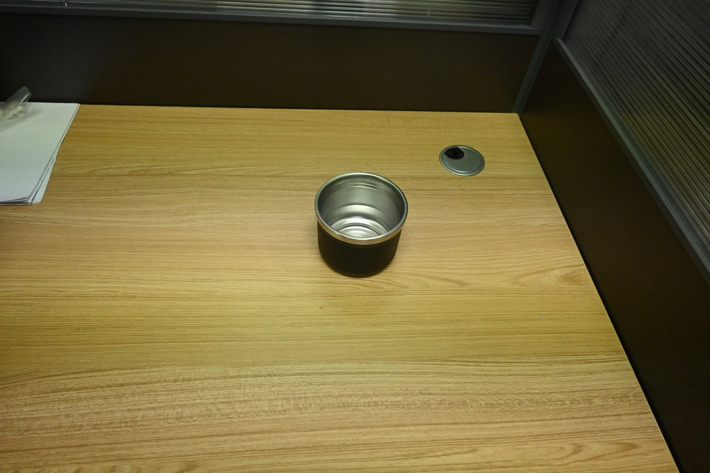
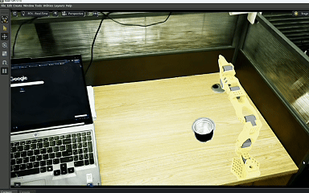
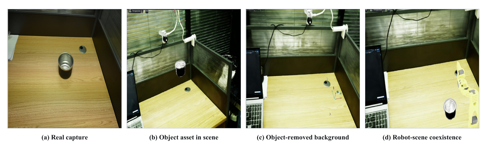
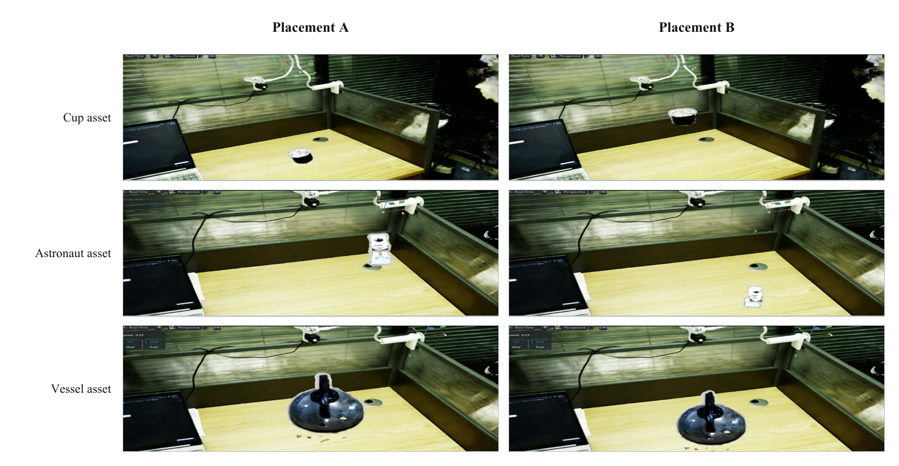
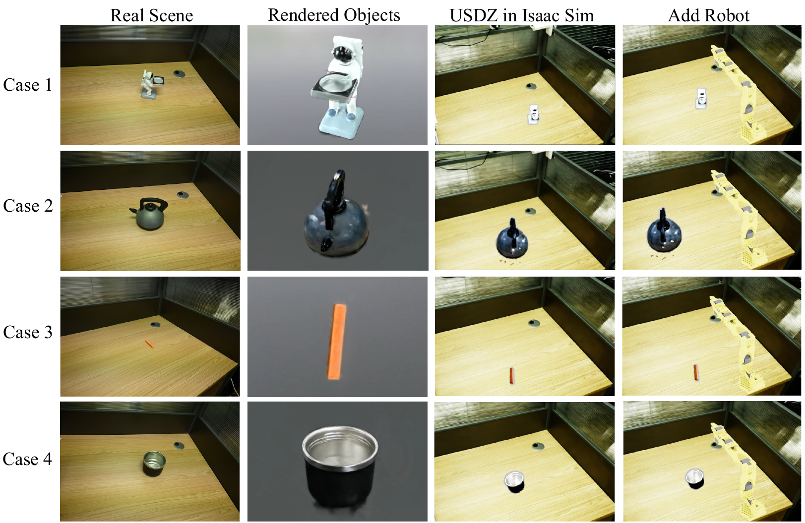
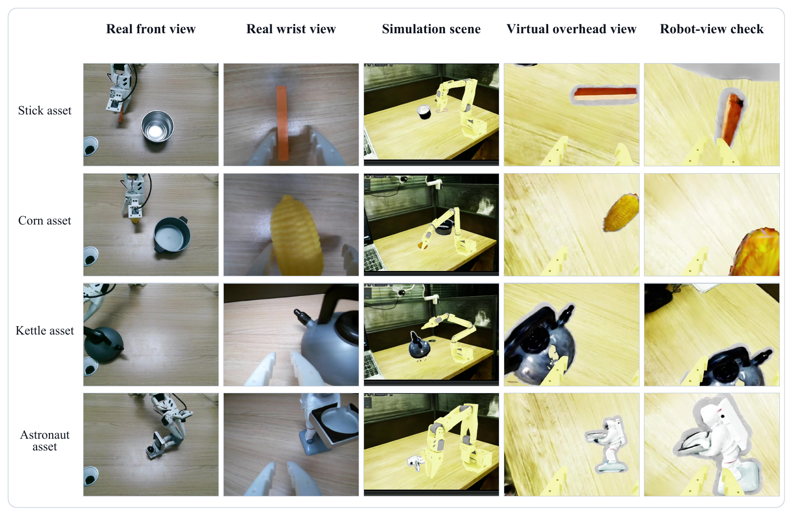

Real-scene input
A captured tabletop object is used as the starting point for object-level decoupling, background recovery, and later scene recomposition.
Independent object Gaussian subspaces, background Gaussian recovery, parameter-level scene composition, and selected visual asset-interface checks
Real captured scenes are decomposed into independently renderable object Gaussian subspaces and a recoverable background Gaussian model.
The resulting Gaussian assets can be omitted, repositioned, recomposed with the recovered background, and visually inspected after USD/USDZ conversion.

A captured tabletop object is used as the starting point for object-level decoupling, background recovery, and later scene recomposition.

The converted asset is shown in a virtual scene with a robot arm as a selected visual placement and coexistence record.
Object-level 3D scene reconstruction requires representations that preserve appearance while exposing foreground objects and background context as separately manageable components. Conventional scene-level 3D Gaussian Splatting couples these components in one parameter field, obscuring object ownership and complicating object removal, background recovery, and scene recomposition.
DOGS addresses this representation gap by optimizing each target in an object Gaussian subspace with cross-view instance masks, foreground supervision, and mask-outside alpha suppression. A separately supervised background Gaussian model combines visible-background observations with weak inpainting priors, and parameter-level scene composition assembles the resulting components in a shared coordinate system.
The current evidence follows traceable real-scene and real-to-virtual records: object relocation, background recovery after object removal, four-category correspondence across real and virtual views, and selected USD/USDZ deployment views. These observations support a visual scene-representation and asset-provisioning interpretation; they do not establish dynamics accuracy, collision fidelity, population-level reconstruction superiority, or closed-loop task performance.
DOGS moves explicit 3D Gaussian representation from coupled scene reconstruction toward object-level structured assets that can be independently managed, reused, and recomposed.
Instance-mask foreground supervision and mask-outside alpha suppression restrict each object model to its own support region and reduce non-target opacity responses.
Independent object and background Gaussian models are composed in a shared coordinate system, supporting omission, repositioning, visual recomposition, and downstream USD/USDZ conversion.
Evaluation links object reconstruction, background recovery, composed-scene consistency, and Isaac Sim / Isaac Lab asset-interface checks to the same object-level decoupling claim.
Each target instance is optimized as an independent object Gaussian model using multi-view RGB images and cross-view consistent instance masks.
L_object = mean_masked(L1 RGB) + lambda_alpha * mean_outside(|alpha|)
The background is trained after object regions are excluded. Visible and LaMa-inpainted regions are normalized separately, the inpainted term is weighted by rho, and local plane residuals regularize background Gaussian centers.
L_bg = L_bg-rgb + lambda_reg * L_bg-reg, rho = 0.1
Objects and background are directly merged in the shared world coordinate system and rendered using the standard Gaussian Splatting renderer.
G_scene = G_bg union {G_obj}




Object rendering, USD/URDF packaging, scene-tree parsing, relative placement and scale, hierarchy, and collision-proxy availability.
Dynamics accuracy, contact stability, mass/inertia calibration, closed-loop control, and robot task performance are outside the reported evaluation.
The source release provides the paper-aligned training losses, boundary and leakage metrics, conversion utilities, simulation-interface notes, figure-source manifests, and asset-placement instructions.
Large media, model weights, Gaussian outputs, and USD/USDZ assets are excluded from the source repository and indexed by relative path and checksum in the asset manifests.
@misc{dogs2026decoupled,
title = {DOGS: Decoupled Object Gaussian Splatting for Composable Real-Scene Reconstruction and Reuse},
year = {2026},
note = {Project page and source release}
}